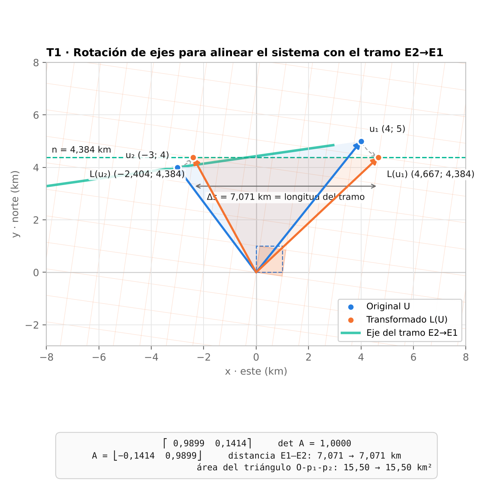
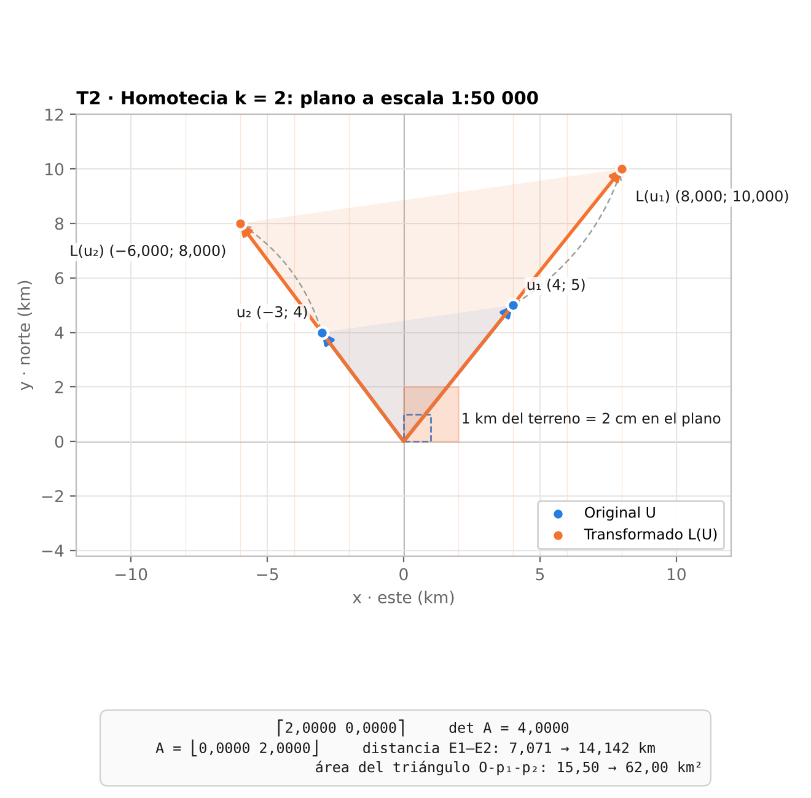
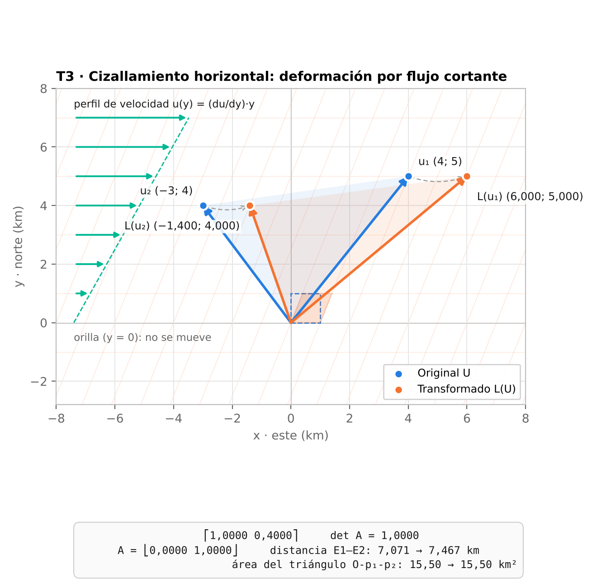
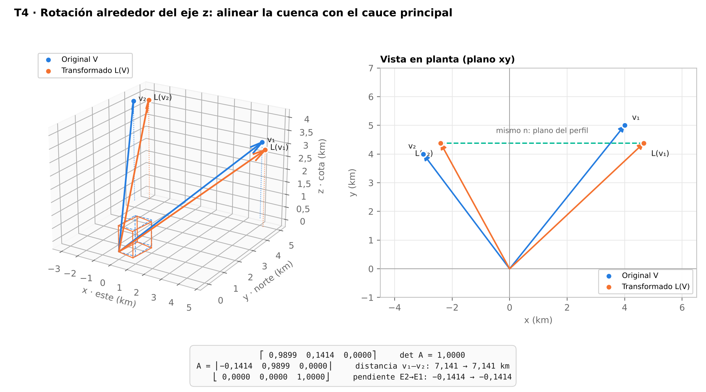
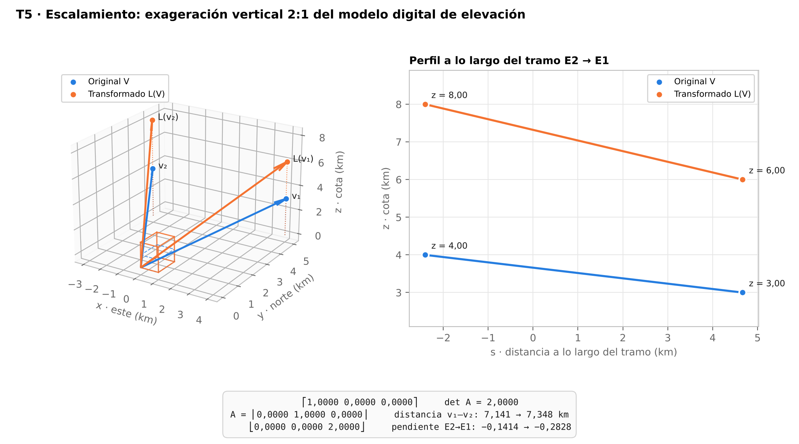
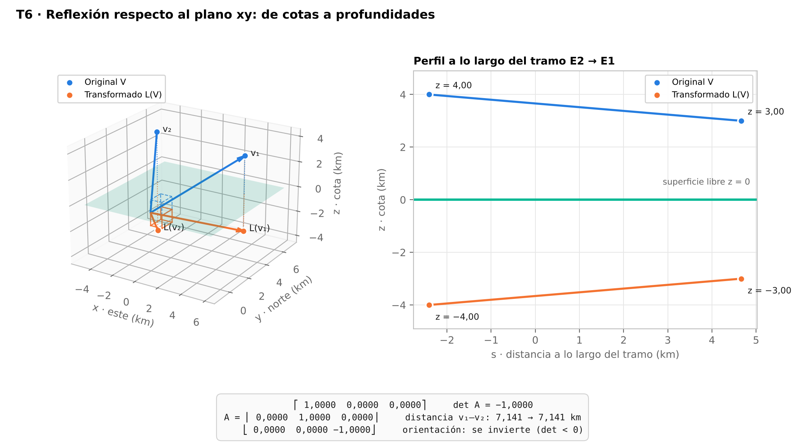
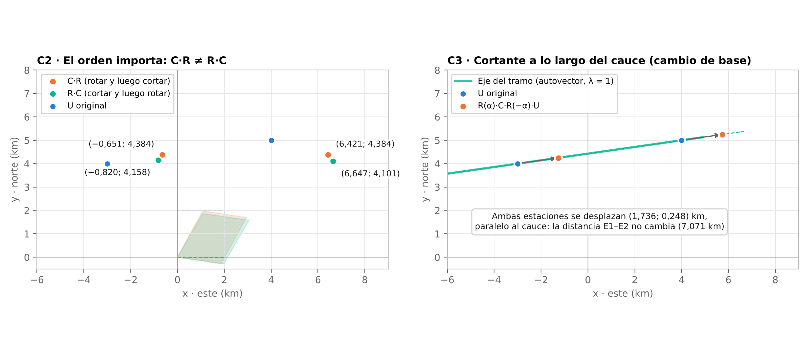
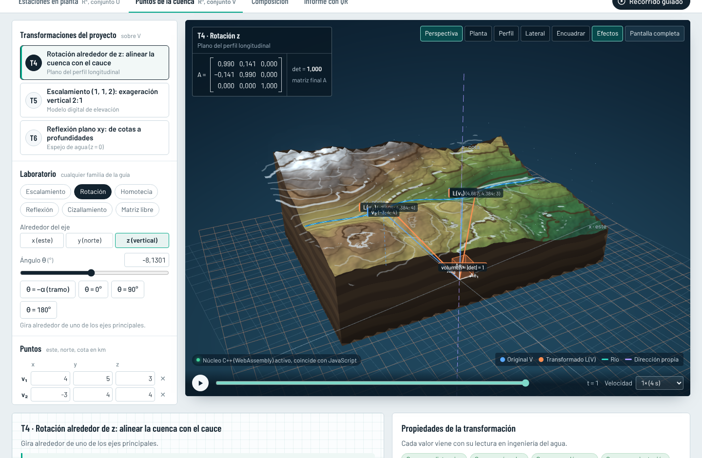
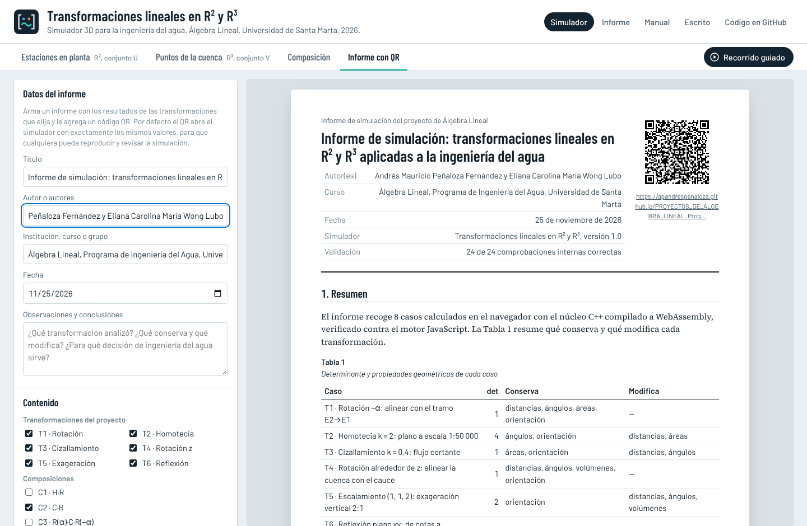

Informe del proyecto (normas APA 7)
Transformaciones lineales en R² y R³ aplicadas a la ingeniería del agua: estaciones hidrométricas, perfil de un cauce y un simulador 3D
Resumen
Este proyecto aplica las transformaciones lineales del plano y del espacio a información espacial propia de la ingeniería del agua. Siguiendo la guía del curso, se transformó el conjunto U = {(4, 5), (−3, 4)}, que representa las posiciones en planta de dos estaciones hidrométricas, y el conjunto V = {(4, 5, 3), (−3, 4, 4)}, que agrega su cota. En R² se desarrollaron una rotación de ejes que alinea el sistema con el tramo de río entre las estaciones (α = arctan(1/7) ≈ 8,13°), una homotecia que dibuja las estaciones en un plano a escala 1:50 000 y un cizallamiento que modela la deformación de un trazador por flujo cortante; en R³, una rotación alrededor del eje vertical que lleva ambos puntos al plano del perfil longitudinal, una exageración vertical 2:1 y una reflexión respecto al plano xy que convierte cotas en profundidades. Cada transformación se interpreta a partir del determinante, la ortogonalidad y los autovalores, y se analiza la composición: en R² la rotación y el cizallamiento no conmutan, mientras que las tres transformaciones de R³ sí lo hacen. Los cálculos se programaron en tres motores independientes (Python con NumPy, C++ compilado a WebAssembly y JavaScript), cuya mayor diferencia fue 1,8·10⁻¹⁵, y se integraron en un simulador web 3D con informe reproducible mediante código QR.
Palabras clave: transformaciones lineales, matrices de transformación, ingeniería del agua, información espacial, composición de transformaciones, simulador 3D
En la ingeniería del agua casi toda la información de trabajo es espacial: las coordenadas de las estaciones hidrométricas, los vértices de las secciones transversales de un río, los nodos de una red de distribución o los puntos de un modelo digital de elevación son vectores de o (Chacuto López, 2026). Cada vez que un sistema de información geográfica cambia la escala de un plano, alinea los ejes con un cauce o exagera el relieve para mostrarlo, aplica una transformación lineal a miles de puntos a la vez (Burrough et al., 2015).
Este informe desarrolla el proyecto de álgebra lineal propuesto para el Programa de Ingeniería del Agua: tres transformaciones en aplicadas a un conjunto de dos estaciones hidrométricas y tres en aplicadas a dos puntos de una cuenca, con su interpretación y el análisis de su composición. Para que el desarrollo pueda verificarse y manipularse, se construyó un simulador web 3D cuyos cálculos se programaron en Python, C++ y JavaScript, publicado junto con este informe, un manual de usuario y un escrito sobre la importancia de las transformaciones lineales en la profesión.
Planteamiento del problema
Las matrices de escalamiento, rotación, homotecia, reflexión y cizallamiento suelen estudiarse como objetos geométricos aislados, mientras que en la práctica el ingeniero las usa sin nombrarlas, a través del software. Esa distancia tiene consecuencias concretas: una longitud de tramo medida en coordenadas este-norte en lugar de coordenadas del cauce, una pendiente leída sobre un perfil con exageración vertical o un volumen trasladado de un modelo a escala con el factor equivocado producen errores que pasan inadvertidos, porque nadie revisa qué conserva y qué modifica la transformación aplicada.
El proyecto parte de dos conjuntos de datos de la guía del curso: , posiciones en planta (km) de dos estaciones hidrométricas respecto a un origen común, y , coordenadas este, norte y cota (km) de dos puntos de una cuenca (Chacuto López, 2026). Como las componentes horizontales de V coinciden con las de U, se interpretan como las mismas estaciones con su cota: E2, a 4 km de altitud, está aguas arriba de E1, a 3 km.
Pregunta orientadora: ¿cómo se representan, mediante matrices estándar, las operaciones de cambio de escala, cambio de ejes, simetría y deformación que la ingeniería del agua aplica a la información espacial, y qué propiedades geométricas de esa información conserva o modifica cada una?
Justificación
El Objetivo de Desarrollo Sostenible 6 busca garantizar la disponibilidad y la gestión sostenible del agua, y su meta 6.5 propone implementar la gestión integrada de los recursos hídricos a todos los niveles (Naciones Unidas, 2015). Esa gestión se apoya en modelos hidráulicos, mapas y balances construidos sobre información espacial, cuya calidad condiciona las decisiones sobre el agua (UNESCO, 2024).
El proyecto mejora decisiones concretas: medir la longitud de un tramo y ubicar secciones transversales en coordenadas del cauce, como lo exigen los modelos unidimensionales de ríos (Brunner, 2016); leer correctamente los perfiles con exageración vertical, porque una pendiente duplicada en la figura implica, por la ecuación de Manning, una velocidad sobreestimada en un 41 % (Chow, 1959); transferir resultados de un modelo físico al prototipo con los factores , y (Chanson, 2004; Hughes, 1993), y describir la deformación de una mancha de trazador por flujo cortante, base de la mezcla en ríos y lagos (Fischer et al., 1979).
Objetivos
Objetivo general
Modelar transformaciones lineales fundamentales en el plano cartesiano () y en el espacio () mediante sus representaciones matriciales estándar, para interpretar su función e impacto en el tratamiento de información espacial e hidráulica: cambios de escala y de coordenadas, y construcción de modelos.
Objetivos específicos
- Definir rigurosamente las matrices estándar asociadas a las transformaciones de escalamiento, rotación, homotecia, reflexión y cizallamiento en R² y R³.
- Construir un entorno de simulación paramétrico, equivalente a GeoGebra, Matlab o Python, que aplique esas matrices a U y V con deslizadores y operaciones matriciales.
- Analizar cualitativa y cuantitativamente el impacto de la composición de varias transformaciones lineales sobre un conjunto de puntos e interpretar el resultado en el contexto de la ingeniería del agua.
- Verificar los cálculos con tres implementaciones independientes (Python, C++ y JavaScript) y documentar el proyecto de forma reproducible, con enlaces y códigos QR.
La Tabla 1 relaciona cada objetivo específico con el lugar del simulador y los archivos que lo evidencian.
Tabla 1Correspondencia entre los objetivos específicos, el simulador y los archivos del proyecto
| Objetivo | Dónde se evidencia en el simulador | Archivos |
|---|---|---|
| 1 | Panel de ecuaciones: matriz simbólica, matriz numérica, fórmulas por coordenadas y producto paso a paso | js/ecuaciones/catalogo.js, python/transformaciones.py |
| 2 | Módulos «Estaciones en planta» y «Puntos de la cuenca»: transformaciones T1–T6, laboratorio con deslizadores, línea de tiempo con control de velocidad | index.html, python/T1_… a python/T6_… |
| 3 | Módulo «Composición»: producto de matrices, orden inverso y prueba de conmutatividad | python/composicion.py, js/app/interfaz.js |
| 4 | Aviso de validación interna, indicador del núcleo C++ y pestaña «Informe con QR» | cpp/, pruebas/, python/validacion_cruzada.py |
Marco teórico
Transformación lineal y matriz estándar
Una función es una transformación lineal si y para todos los vectores , y todo escalar (Grossman y Flores Godoy, 2012; Lay et al., 2016). Toda transformación lineal se escribe como el producto de una matriz por un vector, y las columnas de esa matriz estándar son las imágenes de los vectores canónicos:
Por eso basta saber qué le ocurre a , y, en el espacio, , para saber qué le ocurre a cualquier punto; en el simulador esas columnas se dibujan como flechas blancas.
Matrices estándar en R²
Un punto representa la posición en planta de una estación (este y norte, en km). La guía define las siguientes matrices (Chacuto López, 2026; Anton y Rorres, 2014). El escalamiento cambia la escala de cada eje; con exagera la escala vertical de una sección o de un perfil:
La rotación gira los puntos un ángulo en sentido antihorario alrededor del origen. Si el eje de un río forma un ángulo con el eje x, la rotación de ángulo da las coordenadas longitudinal y transversal de cada punto:
La homotecia es un escalamiento uniforme (): describe la semejanza entre un modelo a escala o un plano y el prototipo, en la que las longitudes se multiplican por y las áreas por :
Las reflexiones respecto al eje x, al eje y y al origen producen una imagen especular; la reflexión respecto al eje y permite construir una sección simétrica, como un canal trapezoidal, a partir de una de sus mitades:
El cizallamiento desplaza los puntos a lo largo de un eje en proporción a la otra coordenada. Modela un flujo cortante simple: si la velocidad crece linealmente con la distancia al fondo o a una orilla, tras un tiempo la partícula en pasa a , con :
Matrices estándar en R³
Un punto representa una posición con coordenadas este, norte y cota, por ejemplo un punto del modelo digital de elevación de una cuenca. Con y el escalamiento produce la exageración vertical habitual en la visualización del relieve:
Las rotaciones se definen respecto a los ejes principales. La rotación alrededor del eje vertical gira la planta de una obra o de una cuenca; las rotaciones alrededor de un eje horizontal inclinan un plano, como el talud de una presa:
La homotecia representa un modelo geométricamente semejante (vertedero, compuerta, embalse), en el que las longitudes se multiplican por , las áreas por y los volúmenes por . Las reflexiones respecto a los planos coordenados expresan la simetría de un canal respecto a su plano longitudinal medio o, tomando la superficie libre como , el intercambio entre alturas y profundidades:
Finalmente, el cizallamiento a lo largo del eje x en función de y describe una velocidad longitudinal que varía linealmente con la coordenada transversal y con la profundidad, con y :
Propiedades que permiten interpretar una transformación
El valor absoluto del determinante es el factor por el que se multiplican las áreas (en ) o los volúmenes (en ), y su signo indica si la orientación se conserva o se invierte; además, el determinante de un producto es el producto de los determinantes (Strang, 2016):
Una matriz ortogonal () conserva longitudes y ángulos; las rotaciones y las reflexiones lo son. Si todos los valores singulares de son iguales, es un múltiplo de una matriz ortogonal y conserva los ángulos pero no las longitudes, como la homotecia. Los autovectores son las direcciones que la transformación no gira (): en ingeniería del agua identifican lo que permanece fijo, como la orilla en un flujo cortante o el plano horizontal en una exageración vertical; si los autovalores son complejos, como en una rotación del plano, ninguna dirección real se conserva. La matriz inversa, cuando existe, deshace la transformación.
Si se aplica primero y después , la matriz de la composición es el producto , que en general depende del orden (Lay et al., 2016):
Información espacial en la ingeniería del agua
Los modelos unidimensionales de ríos describen el cauce con un abscisado a lo largo de su eje y secciones transversales perpendiculares al flujo (Brunner, 2016), lo que exige pasar de coordenadas este-norte a coordenadas del cauce mediante una rotación. Los planos se dibujan a escala, una homotecia, siempre que la zona sea pequeña frente a las deformaciones de la proyección cartográfica (Snyder, 1987). Los modelos físicos son geométricamente semejantes al prototipo o deliberadamente distorsionados, con escalas horizontal y vertical distintas (Chanson, 2004; Hughes, 1993). Los modelos digitales de elevación se visualizan con exageración vertical para apreciar el relieve (Burrough et al., 2015), y la mezcla de un trazador en un río o un lago está dominada por el cortante del perfil de velocidad (Fischer et al., 1979).
Modelo matemático del caso
Datos y dirección del cauce
Los puntos de U y V se expresan en kilómetros respecto a un origen común, por ejemplo un vértice geodésico. Si el tramo de río entre las estaciones es aproximadamente recto, su dirección es , de modo que el eje del cauce forma con el eje x el ángulo
Este ángulo, deducido de los propios datos de la guía, se usa en las rotaciones T1 y T4 y en las composiciones.
Transformaciones elegidas
Se eligieron seis transformaciones que cubren las cinco familias de la guía y cuyas propiedades difieren entre sí (Tabla 2): dos rotaciones que conservan distancias y orientación (T1 y T4), una semejanza (T2), una transformación que conserva el área pero no las distancias (T3), una que cambia el volumen (T5) y una que invierte la orientación (T6).
Tabla 2Transformaciones desarrolladas sobre los conjuntos U y V
| Clave | Espacio | Familia y parámetro | Matriz | Operación en ingeniería del agua |
|---|---|---|---|---|
| T1 | R² | Rotación, θ = −α | Coordenadas del cauce (s, n) | |
| T2 | R² | Homotecia, k = 2 | Plano a escala 1:50 000 | |
| T3 | R² | Cizallamiento en x, k = 0,4 | Deformación por flujo cortante | |
| T4 | R³ | Rotación alrededor de z, θ = −α | Alinear la cuenca con el cauce | |
| T5 | R³ | Escalamiento (1, 1, 2) | Exageración vertical 2:1 | |
| T6 | R³ | Reflexión respecto al plano xy | Cambio de cotas a profundidades |
Hipótesis y límites de validez
- Todas las transformaciones actúan respecto al origen común. Un cambio de origen (traslación) no es lineal y requeriría coordenadas homogéneas.
- La homotecia representa un plano a escala sin las deformaciones de la proyección cartográfica, lo que es aceptable para zonas de pocas decenas de kilómetros (Snyder, 1987).
- El cizallamiento supone un perfil de velocidad lineal en la dirección transversal; en un río real el perfil es aproximadamente logarítmico cerca del fondo, por lo que el modelo es una aproximación local (Chow, 1959; Fischer et al., 1979).
- La exageración vertical es una transformación de visualización: cambia la figura, no el terreno.
Metodología
- Lectura de la guía, elección de las transformaciones de la Tabla 2 y de sus parámetros, y formulación de su interpretación.
- Desarrollo a mano de cada producto A·p y de las propiedades de cada matriz (determinante, ortogonalidad, autovalores e inversa).
- Programación de tres motores independientes: Python con NumPy (Harris et al., 2020), que genera los valores de referencia y las figuras con Matplotlib (Hunter, 2007); un núcleo en C++17 sin dependencias, con seno y coseno propios, compilado como programa nativo y a WebAssembly (Haas et al., 2017), y un motor en JavaScript para la interfaz.
- Validación cruzada de los tres motores y pruebas unitarias del núcleo C++.
- Construcción del simulador: motor gráfico con three.js (three.js authors, 2021) y sombreadores GLSL que aplican la matriz en la tarjeta gráfica, con las normales transformadas por la inversa transpuesta (Hughes et al., 2014), y enlaces reproducibles con código QR generados con qrcode-generator (Arase, s. f.).
- Publicación en GitHub Pages del simulador, este informe, el manual de usuario y el escrito.
Desarrollo de las transformaciones
Esta sección presenta el desarrollo de cada transformación con los mismos números que muestra el simulador. Los valores se redondean a cuatro decimales; los cálculos se hicieron en doble precisión.
Transformaciones en R² sobre el conjunto U
T1. Rotación −α: coordenadas del cauce
Con en la ecuación 3, y , de modo que
La primera coordenada de la imagen es la abscisa , distancia a lo largo del cauce, y la segunda es el desplazamiento transversal . Las dos estaciones quedan con el mismo km, que es la distancia del origen al eje del tramo, y su diferencia de abscisas es km: la longitud del tramo. Es la misma distancia entre las estaciones en el plano original, porque la rotación es ortogonal (, ) y conserva distancias, ángulos y áreas. Sus autovalores, , son complejos: ninguna dirección del plano se conserva. La inversa, , devuelve las coordenadas del cauce al sistema este-norte. La Figura 1 muestra el resultado.
Figura 1Rotación de ejes −α aplicada a U

Nota. Generada con el script T1_rotacion_cauce.py. Azul: U; naranja: imágenes. La recta aguamarina es el eje del tramo E2→E1 y la línea discontinua marca el valor de n, común a ambas imágenes.
T2. Homotecia k = 2: plano a escala 1:50 000
En un plano a escala 1:50 000, 1 km del terreno (100 000 cm) se dibuja como 100 000/50 000 = 2 cm. Leer las coordenadas en centímetros de papel es aplicar la homotecia de razón cm/km:
Las longitudes se multiplican por : la distancia entre las estaciones pasa de 7,0711 km a 14,1421 cm de papel. Las áreas se multiplican por : el triángulo formado por el origen y las estaciones pasa de 15,5 km² a 62 cm². Los ángulos no cambian (75,53° entre los vectores de posición antes y después), porque los dos valores singulares valen 2: el plano es semejante al terreno. Todo vector es propio con , y la inversa permite pasar de distancias medidas en el plano a distancias reales (Figura 2).
Figura 2Homotecia de razón 2 aplicada a U (plano a escala 1:50 000)

Nota. Generada con el script T2_homotecia_plano.py. El cuadrado unitario se transforma en un cuadrado de lado 2 y área 4 = det A₂.
T3. Cizallamiento k = 0,4: flujo cortante
Si la velocidad en la dirección x crece linealmente con la distancia y a la orilla, , en un intervalo la partícula que está en avanza . Con y h, y
Aquí U se interpreta como dos flotadores liberados en las posiciones de las estaciones dentro de un cuerpo de agua amplio. El flotador más alejado de la orilla avanza más (2 km frente a 1,6 km), la distancia entre ambos aumenta de 7,0711 km a 7,4673 km y el ángulo entre sus vectores de posición baja de 75,53° a 69,48°. Sin embargo, el área se conserva (), como corresponde a un flujo incompresible: el trazador se estira sin comprimirse, que es el mecanismo de la dispersión por cortante (Fischer et al., 1979). El autovalor es doble, pero solo tiene una dirección propia, el eje x: la orilla no se mueve (Figura 3).
Figura 3Cizallamiento horizontal de factor 0,4 aplicado a U

Nota. Generada con el script T3_cizallamiento_flujo.py. Las flechas aguamarina representan el perfil lineal de velocidad; el cuadrado unitario se convierte en un paralelogramo de la misma área.
Transformaciones en R³ sobre el conjunto V
T4. Rotación alrededor del eje z: alinear la cuenca con el cauce
La rotación alrededor de la vertical gira la planta y deja intacta la cota. Como en T1, los dos puntos quedan con la misma segunda coordenada: ambos están en el plano vertical km, que es el plano del perfil longitudinal del río. En ese plano, la pendiente media del tramo E2→E1 es : el río desciende un 14,14 %, propio de un torrente de alta montaña. La distancia entre los puntos ( km), los ángulos y los volúmenes se conservan; el eje z es la dirección propia con y los otros dos autovalores son complejos (Figura 4).
Figura 4Rotación alrededor del eje z aplicada a V

Nota. Generada con el script T4_rotacion_cuenca.py. A la izquierda, la vista tridimensional con el cubo unitario; a la derecha, la planta: las dos imágenes quedan sobre la misma recta paralela al eje x′.
T5. Escalamiento (1, 1, 2): exageración vertical 2:1
Con y la planta no cambia y las cotas se duplican. Es la exageración vertical habitual al visualizar el modelo digital de elevación de una cuenca (Burrough et al., 2015): el relieve se aprecia mejor, pero la pendiente dibujada pasa de −0,1414 a −0,2828 y la distancia entre los puntos, de 7,1414 km a 7,3485 km. Los volúmenes se duplican () y los ángulos cambian; el plano horizontal es un subespacio propio con y el eje z lo es con (Figura 5). La lección práctica es que no deben medirse pendientes sobre una figura exagerada; la sección de análisis cuantifica el error.
Figura 5Exageración vertical 2:1 aplicada a V

Nota. Generada con el script T5_exageracion_vertical.py. A la derecha, el perfil a lo largo del tramo E2→E1: la pendiente dibujada se duplica.
T6. Reflexión respecto al plano xy: de cotas a profundidades
Si el plano xy es la superficie libre (), la reflexión intercambia alturas sobre la superficie y profundidades bajo ella: es el paso de la convención topográfica, con z positiva hacia arriba, a la batimétrica, con la profundidad positiva hacia abajo, y visualmente es el reflejo del relieve en un espejo de agua. La matriz es ortogonal y conserva distancias y volúmenes, pero : el espacio cambia de orientación, de modo que un sistema de ejes de mano derecha pasa a ser de mano izquierda. El plano xy está formado por vectores propios con y el eje z es propio con (Figura 6). En el simulador, la animación lleva la escala vertical de 1 a −1 y atraviesa necesariamente : no existe un movimiento continuo que invierta la orientación sin aplastar el espacio.
Figura 6Reflexión respecto al plano xy aplicada a V

Nota. Generada con el script T6_reflexion_superficie.py. El plano aguamarina representa la superficie libre z = 0.
Síntesis
Las Tablas 3 y 4 reúnen las imágenes de los dos conjuntos y la Tabla 5 resume las propiedades que distinguen a las seis transformaciones.
Tabla 3Imágenes del conjunto U y medidas antes y después de T1, T2 y T3
| Elemento | Original | T1 | T2 | T3 |
|---|---|---|---|---|
| u₁ | (4; 5) | (4,6669; 4,3841) | (8; 10) | (6; 5) |
| u₂ | (−3; 4) | (−2,4042; 4,3841) | (−6; 8) | (−1,4; 4) |
| Distancia u₁–u₂ | 7,0711 | 7,0711 | 14,1421 | 7,4673 |
| Área del triángulo O-u₁-u₂ | 15,5 | 15,5 | 62 | 15,5 |
| Ángulo entre u₁ y u₂ | 75,53° | 75,53° | 75,53° | 69,48° |
Nota. Coordenadas y distancias en km (en T2, en cm de papel); áreas en km² (en T2, en cm²).
Tabla 4Imágenes del conjunto V y medidas antes y después de T4, T5 y T6
| Elemento | Original | T4 | T5 | T6 |
|---|---|---|---|---|
| v₁ | (4; 5; 3) | (4,6669; 4,3841; 3) | (4; 5; 6) | (4; 5; −3) |
| v₂ | (−3; 4; 4) | (−2,4042; 4,3841; 4) | (−3; 4; 8) | (−3; 4; −4) |
| Distancia v₁–v₂ | 7,1414 | 7,1414 | 7,3485 | 7,1414 |
| Pendiente E2→E1 | −0,1414 | −0,1414 | −0,2828 | 0,1414 |
Nota. Coordenadas y distancias en km. La pendiente es el cociente entre el cambio de cota y la distancia horizontal.
Tabla 5Propiedades geométricas de las seis transformaciones
| Clave | det A | Distancias | Ángulos | Área o volumen | Orientación | Autovalores |
|---|---|---|---|---|---|---|
| T1 | 1 | Conserva | Conserva | Conserva | Conserva | 0,9899 ± 0,1414i |
| T2 | 4 | ×2 | Conserva | ×4 | Conserva | 2; 2 |
| T3 | 1 | Modifica | Modifica | Conserva | Conserva | 1; 1 (una sola dirección propia) |
| T4 | 1 | Conserva | Conserva | Conserva | Conserva | 1; 0,9899 ± 0,1414i |
| T5 | 2 | Modifica | Modifica | ×2 | Conserva | 2; 1; 1 |
| T6 | −1 | Conserva | Conserva | Conserva | Invierte | 1; 1; −1 |
Nota. Valores calculados por los tres motores del proyecto; coinciden con los que muestra el panel de propiedades del simulador.
Composición de transformaciones
La guía pide analizar el impacto de la composición de varias transformaciones sobre un conjunto de puntos (Chacuto López, 2026). Se estudiaron seis composiciones, elegidas para contrastar casos que conmutan con casos que no (Tabla 6).
Tabla 6Composiciones analizadas
| Clave | Composición (orden de aplicación) | Matriz | det | ¿Conmutan? | Imagen de u₁ o v₁ |
|---|---|---|---|---|---|
| C1 | T1 y luego T2 | H·R | 4 | Sí | (9,3338; 8,7681) |
| C2 | T1 y luego T3 | C·R | 1 | No | (6,4205; 4,3841) |
| C3 | T1, T3 y rotación +α | R(α)·C·R(−α) | 1 | No | (5,736; 5,248) |
| C4 | T4 y luego T5 | S·Rz | 2 | Sí | (4,6669; 4,3841; 6) |
| C5 | T4, T5 y T6 | F·S·Rz | −2 | Sí | (4,6669; 4,3841; −6) |
| C6 | Rotación x de 10° y luego T5 | S·Rx | 2 | No | (4; 4,4031; 7,6453) |
Nota. «Conmutan» indica que el producto en orden inverso da la misma matriz.
En R² el orden importa
La homotecia conmuta con cualquier matriz porque es un múltiplo de la identidad: dibujar a escala y luego rotar es lo mismo que rotar y luego dibujar (C1). En cambio, la rotación y el cizallamiento no conmutan:
Con primero se pasa a coordenadas del cauce y luego el cortante actúa a lo largo del cauce, ; por eso las imágenes conservan km: y . En el orden inverso, el cortante actúa hacia el este en coordenadas del plano y después se rota, y termina en (6,6468; 4,1012). La diferencia entre ambas matrices, medida con la norma de Frobenius, es 0,0800: pequeña en números, pero con un significado físico distinto.
La composición C3, , expresa el mismo cortante a lo largo del cauce, pero de vuelta en coordenadas este-norte: es un cambio de base. Su única dirección propia es la del tramo, (7, 1), y como E1 y E2 tienen el mismo , ambos se desplazan el mismo vector, (1,736; 0,248) km, paralelo al cauce: la distancia entre ellos no cambia (Figura 7).
Figura 7Composición de la rotación y el cizallamiento

Nota. Generada con el script composicion.py. Izquierda: imágenes de U con C·R (naranja) y con R·C (aguamarina). Derecha: el cortante a lo largo del cauce desplaza ambas estaciones el mismo vector.
En R³ las transformaciones elegidas comparten subespacios invariantes
Las tres transformaciones de conmutan entre sí: solo combina con , mientras que la exageración y la reflexión solo actúan sobre . Por eso el perfil longitudinal exagerado (C4) se obtiene en cualquier orden, y la composición de las tres (C5) tiene determinante : el volumen se duplica y la orientación se invierte. Si en cambio se inclina el terreno con una rotación de 10° alrededor del eje x antes de exagerarlo (C6), el orden sí importa, porque combina con :
En todas las composiciones se comprobó que el determinante del producto es el producto de los determinantes (ecuación 11).
Diseño del simulador
El simulador es un sitio web estático publicado en GitHub Pages: no requiere instalación y también funciona sin conexión si se descarga el repositorio. La Tabla 7 resume su arquitectura.
Tabla 7Arquitectura del simulador
| Componente | Lenguaje | Archivos | Función |
|---|---|---|---|
| Motor de ecuaciones | JavaScript | js/ecuaciones/ | Álgebra lineal 2×2 y 3×3, familias de la guía, generación de LaTeX y lectura hidráulica de cada propiedad |
| Núcleo de cálculo | C++17 compilado a WebAssembly | cpp/, wasm/ | Matrices estándar, productos, determinante, inversa, autovalores y valores singulares; seno y coseno propios |
| Motor gráfico | JavaScript y GLSL | js/grafico/ | Escena con three.js, relieve de la cuenca, sombreadores que aplican la matriz en la GPU, animación y resplandor |
| Interfaz | HTML, CSS y JavaScript | index.html, css/, js/app/ | Módulos R², R³ y composición, informe con QR, enlaces reproducibles y recorrido guiado |
| Scripts | Python | python/ | Un script por transformación, composición, figuras y validación cruzada |
| Documentos | HTML, Word y PDF | informe.html, manual.html, escrito.html, documentos/ | Informe en normas APA 7, manual de usuario y escrito |
Módulos e interfaz
El módulo «Estaciones en planta» (Figura 8) muestra U sobre el mapa topográfico de la cuenca. A la izquierda están las tres transformaciones del proyecto, el laboratorio con todas las familias de la guía y sus deslizadores, la tabla editable de puntos y las capas. El visor muestra un cajetín, como el rótulo de un plano, con la matriz que se está aplicando, su determinante y el instante de la animación; una línea de tiempo permite recorrer la transformación desde la identidad (t = 0) hasta la matriz final (t = 1), y su selector de velocidad (0,25×, 0,5×, 1× o 2×) fija cuánto dura cada animación (4 s a 1× y el doble a 0,5×), de modo que el movimiento puede seguirse con calma. Debajo, el panel de ecuaciones presenta la matriz simbólica, la matriz numérica, las fórmulas por coordenadas y el producto paso a paso, y el panel de propiedades acompaña cada valor con su lectura en ingeniería del agua.
Figura 8Módulo «Estaciones en planta» con la transformación T1

Nota. Captura del simulador en un navegador de escritorio. El aviso verde informa el resultado de la validación interna.
El módulo «Puntos de la cuenca» (Figura 9) presenta el mismo relieve como un bloque diagrama, con la retícula del espacio, el cubo unitario y las cotas de cada punto. El módulo «Composición» permite encadenar hasta ocho pasos, invertir su orden y animarlos uno tras otro; su panel indica si las transformaciones conmutan y compara las imágenes en ambos órdenes.
Figura 9Módulo «Puntos de la cuenca» con la transformación T4

Nota. El bloque de la cuenca gira alrededor del eje vertical; las curvas de nivel y los colores hipsométricos conservan la cota original de cada punto.
La pestaña «Informe con QR» (Figura 10) arma un informe imprimible con las transformaciones y composiciones elegidas: matrices, desarrollo paso a paso, propiedades, medidas y capturas del visor. El escenario completo se codifica en el fragmento de la dirección web, que el navegador no envía al servidor; el código QR del informe abre el simulador exactamente con los mismos valores. Por último, el botón «Recorrido guiado» inicia una presentación automática de once pasos a pantalla completa, con subtítulos, pensada para grabar el video que pide la guía.
Figura 10Pestaña «Informe con QR»

Motor gráfico
El relieve es un modelo digital de elevación procedural cuyo cauce pasa exactamente por E2, a 4 km de cota, y por E1, a 3 km; el valle sigue la dirección del tramo (7, 1) y el río forma meandros con ceros en ambas estaciones. La transformación se aplica en la tarjeta gráfica: cada vértice se multiplica por y cada normal por , de modo que el sombreado sigue siendo correcto después de escalar, cizallar o reflejar (Hughes et al., 2014). El color hipsométrico y las curvas de nivel se calculan con la cota original, de manera que el terreno transformado muestra los mismos datos. En el relieve se aplana y se convierte en un mapa topográfico sombreado; en se presenta como un bloque diagrama.
Validación
La verificación tiene tres niveles: las pruebas unitarias del núcleo C++ (353 comprobaciones, entre ellas seno y coseno frente a la biblioteca estándar, con un error máximo de 1,1·10⁻¹⁶, e inversas, determinantes, autovalores y valores singulares de 20 000 matrices aleatorias); las pruebas del motor JavaScript y del módulo WebAssembly en Node.js (44 comprobaciones), y la función validar() del simulador, que al abrir la página repite las seis transformaciones y las seis composiciones con ambos motores y las compara con los valores de Python (24 comprobaciones). La Tabla 8 muestra la validación cruzada: la mayor diferencia entre motores fue 1,8·10⁻¹⁵, del orden de la precisión de la máquina.
Tabla 8Validación cruzada de los tres motores de cálculo
| Caso | Python – C++ | Python – JavaScript | C++ – JavaScript |
|---|---|---|---|
| T1 | 8,3·10⁻¹⁶ | 8,9·10⁻¹⁶ | 8,9·10⁻¹⁶ |
| T2 | 0 | 0 | 0 |
| T3 | 0 | 0 | 0 |
| T4 | 8,3·10⁻¹⁶ | 8,9·10⁻¹⁶ | 8,9·10⁻¹⁶ |
| T5 | 0 | 0 | 0 |
| T6 | 0 | 0 | 0 |
| C1 | 8,9·10⁻¹⁶ | 1,8·10⁻¹⁵ | 1,8·10⁻¹⁵ |
| C2 | 0 | 2,8·10⁻¹⁷ | 2,8·10⁻¹⁷ |
| C3 | 2,2·10⁻¹⁶ | 2,2·10⁻¹⁶ | 0 |
| C4 | 0 | 8,9·10⁻¹⁶ | 8,9·10⁻¹⁶ |
| C5 | 0 | 8,9·10⁻¹⁶ | 8,9·10⁻¹⁶ |
| C6 | 0 | 0 | 0 |
Nota. Mayor diferencia absoluta entre matrices, imágenes de los puntos, determinantes y autovalores. C++ nativo compilado con g++ 13; JavaScript ejecutado en Node.js 22.
Análisis: consecuencias de leer mal una transformación
Una transformación bien elegida facilita el trabajo; una transformación ignorada produce errores. La Tabla 9 cuantifica cuatro casos con los datos del proyecto.
Tabla 9Errores que se cometen cuando no se tiene en cuenta la transformación aplicada
| Situación | Transformación | Lectura correcta | Lectura errónea | Consecuencia |
|---|---|---|---|---|
| Longitud del tramo E2→E1 | T1, rotación | Δs = 7,0711 km | Δx = 7 km (solo la componente este) | Error de 1,0 % en la longitud y en las pendientes calculadas con ella |
| Pendiente medida sobre un perfil exagerado | T5, | 14,14 % | 28,28 % | Con la ecuación de Manning, : velocidad sobreestimada en 41,4 % |
| Área medida en el plano 1:50 000 | T2, k = 2 | 62 cm² / k² = 15,5 km² | 62 cm² / k = 31 km² | Error del 100 % en el área |
| Volumen de un embalse en un modelo a escala 1:100 | Homotecia en R³, k = 1/100 | Volumen del prototipo subestimado cien veces |
Nota. La ecuación de Manning para canales es en unidades del SI (Chow, 1959); duplicar multiplica por .
En los cuatro casos el error no proviene del cálculo, sino de no saber qué conserva y qué modifica la transformación aplicada. Por eso el simulador acompaña cada matriz con la lectura de su determinante, su ortogonalidad y sus autovalores, y así contribuye a la gestión basada en información confiable que promueve el ODS 6 (Naciones Unidas, 2015).
Conclusiones
Las cinco familias de transformaciones de la guía se representan con matrices estándar cuyas columnas son las imágenes de la base canónica. Esa sola idea explica lo que muestra el simulador: basta mirar hacia dónde van e₁, e₂ y e₃ para saber cómo se transforma un plano, una sección o una cuenca entera.
La dirección del tramo, deducida de los mismos datos de la guía (α = arctan(1/7) ≈ 8,13°), convierte la rotación en una herramienta de ingeniería. En coordenadas del cauce las dos estaciones comparten n = 4,3841 km y su diferencia de abscisas, 7,0711 km, es la longitud del tramo; en R³ ambos puntos caen en el plano del perfil longitudinal, donde la pendiente media del cauce es de 14,14 %.
El determinante, la ortogonalidad y los autovalores bastan para saber qué conserva una transformación: las rotaciones conservan distancias, áreas y orientación; la homotecia, solo la forma; el cizallamiento, el área pero no las distancias; la exageración vertical modifica pendientes y volúmenes, y la reflexión conserva todas las medidas pero invierte la orientación.
La composición no es conmutativa en general: C·R ≠ R·C, y el orden tiene un significado físico, porque indica en qué sistema de coordenadas actúa el cortante. Las transformaciones de R³ elegidas sí conmutan, porque comparten los subespacios invariantes formados por el plano horizontal y el eje vertical.
Los tres motores de cálculo coinciden con diferencias de 1,8·10⁻¹⁵. Como limitaciones, el proyecto considera solo transformaciones respecto a un origen fijo, sin traslaciones, y un relieve sintético. Las extensiones naturales son las transformaciones afines en coordenadas homogéneas, necesarias para georreferenciar planos, y el uso de modelos digitales de elevación reales.
Referencias
Anton, H., y Rorres, C. (2014). Elementary linear algebra: Applications version (11.ª ed.). Wiley.
Arase, K. (s. f.). qrcode-generator [Software]. GitHub. https://github.com/kazuhikoarase/qrcode-generator
Brunner, G. W. (2016). HEC-RAS river analysis system: Hydraulic reference manual (Versión 5.0, CPD-69). U.S. Army Corps of Engineers, Hydrologic Engineering Center.
Burrough, P. A., McDonnell, R. A., y Lloyd, C. D. (2015). Principles of geographical information systems (3.ª ed.). Oxford University Press.
Chacuto López, E. G. (2026). Proyectos de álgebra lineal: Programa de Ingeniería del Agua [Guía de proyecto no publicada]. Universidad de Santa Marta.
Chanson, H. (2004). The hydraulics of open channel flow: An introduction (2.ª ed.). Elsevier Butterworth-Heinemann.
Chow, V. T. (1959). Open-channel hydraulics. McGraw-Hill.
Fischer, H. B., List, E. J., Koh, R. C. Y., Imberger, J., y Brooks, N. H. (1979). Mixing in inland and coastal waters. Academic Press.
Grossman, S. I., y Flores Godoy, J. J. (2012). Álgebra lineal (7.ª ed.). McGraw-Hill.
Haas, A., Rossberg, A., Schuff, D. L., Titzer, B. L., Holman, M., Gohman, D., Wagner, L., Zakai, A., y Bastien, J. F. (2017). Bringing the web up to speed with WebAssembly. En Proceedings of the 38th ACM SIGPLAN Conference on Programming Language Design and Implementation (pp. 185–200). ACM. https://doi.org/10.1145/3062341.3062363
Harris, C. R., Millman, K. J., van der Walt, S. J., Gommers, R., Virtanen, P., Cournapeau, D., Wieser, E., Taylor, J., Berg, S., Smith, N. J., Kern, R., Picus, M., Hoyer, S., van Kerkwijk, M. H., Brett, M., Haldane, A., Fernández del Río, J., Wiebe, M., Peterson, P., … Oliphant, T. E. (2020). Array programming with NumPy. Nature, 585(7825), 357–362. https://doi.org/10.1038/s41586-020-2649-2
Hughes, J. F., van Dam, A., McGuire, M., Sklar, D. F., Foley, J. D., Feiner, S. K., y Akeley, K. (2014). Computer graphics: Principles and practice (3.ª ed.). Addison-Wesley.
Hughes, S. A. (1993). Physical models and laboratory techniques in coastal engineering. World Scientific.
Hunter, J. D. (2007). Matplotlib: A 2D graphics environment. Computing in Science & Engineering, 9(3), 90–95. https://doi.org/10.1109/MCSE.2007.55
Lay, D. C., Lay, S. R., y McDonald, J. J. (2016). Linear algebra and its applications (5.ª ed.). Pearson.
Naciones Unidas. (2015). Transformar nuestro mundo: la Agenda 2030 para el Desarrollo Sostenible (A/RES/70/1).
Snyder, J. P. (1987). Map projections: A working manual (U.S. Geological Survey Professional Paper 1395). U.S. Government Printing Office. https://doi.org/10.3133/pp1395
Strang, G. (2016). Introduction to linear algebra (5.ª ed.). Wellesley-Cambridge Press.
three.js authors. (2021). three.js (Versión r128) [Software]. https://threejs.org
UNESCO. (2024). Informe Mundial de las Naciones Unidas sobre el Desarrollo de los Recursos Hídricos 2024: agua para la prosperidad y la paz. UNESCO.
Apéndice A. Direcciones del proyecto
Tabla A1Direcciones del simulador y de los documentos
| Recurso | Dirección |
|---|---|
| Simulador | https://apandrespenaloza.github.io/PROYECTOS_DE_ALGEBRA_LINEAL_Programa_de-Ingenieria_del_Agua_y_Desarrollo_Sostenible/ |
| Informe del proyecto | https://apandrespenaloza.github.io/PROYECTOS_DE_ALGEBRA_LINEAL_Programa_de-Ingenieria_del_Agua_y_Desarrollo_Sostenible/informe.html |
| Manual de usuario | https://apandrespenaloza.github.io/PROYECTOS_DE_ALGEBRA_LINEAL_Programa_de-Ingenieria_del_Agua_y_Desarrollo_Sostenible/manual.html |
| Escrito sobre la importancia de las transformaciones | https://apandrespenaloza.github.io/PROYECTOS_DE_ALGEBRA_LINEAL_Programa_de-Ingenieria_del_Agua_y_Desarrollo_Sostenible/escrito.html |
| Repositorio (código fuente) | https://github.com/APAndresPenaloza/PROYECTOS_DE_ALGEBRA_LINEAL_Programa_de-Ingenieria_del_Agua_y_Desarrollo_Sostenible |
Figura A1Códigos QR de los recursos del proyecto
Nota. Cada código contiene la dirección de la Tabla A1 correspondiente. «QR Code» es marca registrada de DENSO WAVE INCORPORATED.
Apéndice B. Archivos entregados
La guía pide los archivos .ggb, .m o .py de cada transformación. Se entregan los archivos .py: cada uno imprime el desarrollo completo (matriz, productos paso a paso, propiedades e interpretación) y guarda su figura. Se ejecutan con Python 3 y NumPy (pip install -r python/requirements.txt).
Tabla B1Archivos del repositorio por transformación y por motor
| Archivo | Contenido |
|---|---|
python/T1_rotacion_cauce.py | T1: rotación −α sobre U; admite --alfa para otro ángulo |
python/T2_homotecia_plano.py | T2: homotecia; admite --escala (denominador de la escala del plano) |
python/T3_cizallamiento_flujo.py | T3: cizallamiento; admite --dudy y --dt |
python/T4_rotacion_cuenca.py | T4: rotación alrededor de z sobre V; admite --theta |
python/T5_exageracion_vertical.py | T5: exageración vertical; admite --sz |
python/T6_reflexion_superficie.py | T6: reflexión; admite --plano xy|xz|yz |
python/composicion.py | Composiciones C1–C6 y Figura 7 |
python/transformaciones.py | Biblioteca común: matrices estándar, propiedades y formato |
python/validacion_cruzada.py | Compara Python, C++ y JavaScript (Tabla 8) |
cpp/algebra_lineal.hpp, cpp/mate.hpp | Núcleo C++ sin dependencias (nativo y WebAssembly) |
cpp/main.cpp, cpp/pruebas.cpp, cpp/Makefile | Programa nativo, pruebas unitarias y compilación |
js/ecuaciones/, js/grafico/, js/app/ | Motores de ecuaciones y gráfico, e interfaz del simulador |
documentos/video_recorrido.mp4 | Video de apoyo con el recorrido guiado del simulador |
Apéndice C. Función validar() del simulador
La función se ejecuta al abrir la página, primero con el motor JavaScript y después, cuando carga, con el núcleo C++ compilado a WebAssembly; el resultado aparece en el aviso verde de la parte superior y en el pie de página.
function validar() {
const R = TL.REFERENCIA, AL = TL.AL, CAT = TL.CATALOGO, W = TL.WASM;
const U = TL.ESTADO.U0, V = TL.ESTADO.V0;
const dM = (A, B) => Math.max(...A.flat().map((a, i) => Math.abs(a - B.flat()[i])));
const out = [];
const motores = [{ nombre: 'JavaScript', mat: (F, p) => F.matriz(p), apl: (M, P) => P.map(p => AL.aplicar(M, p)), prod: (A, B) => AL.producto(A, B), det: M => AL.det(M) }];
if (W && W.listo) motores.push({ nombre: 'C++ (WebAssembly)', mat: (F, p) => W.matrizEstandar(F.codigoC, F.c(p)), apl: (M, P) => W.aplicar(M, P), prod: (A, B) => W.producto(A, B), det: M => W.propiedades(M).det });
motores.forEach(mo => {
CAT.PRESETS.forEach(T => {
const F = CAT.porId[T.familia], r = R.T[T.clave];
const M = mo.mat(F, T.p), Q = mo.apl(M, T.n === 2 ? U : V);
const d = Math.max(dM(M, r.M), dM(Q, r.img), Math.abs(mo.det(M) - r.det));
out.push({ motor: mo.nombre, caso: T.clave, dif: d, ok: d < 1e-12 });
});
CAT.COMPOSICIONES.forEach(C => {
const r = R.C[C.clave];
const mats = C.pasos.map(s => mo.mat(CAT.porId[s.familia], s.p));
let M = AL.identidad(C.n), Mi = AL.identidad(C.n);
mats.forEach(A => (M = mo.prod(A, M)));
mats.slice().reverse().forEach(A => (Mi = mo.prod(A, Mi)));
const conm = dM(M, Mi) < 1e-12;
const d = Math.max(dM(M, r.M), dM(Mi, r.Mi), Math.abs(mo.det(M) - r.det));
out.push({ motor: mo.nombre, caso: C.clave, dif: d, ok: d < 1e-12 && conm === r.conmutan });
});
});
const correctas = out.filter(x => x.ok).length;
return { total: out.length, correctas, maxDif: Math.max(...out.map(x => x.dif)), motores: motores.map(m => m.nombre), detalle: out };
}Apéndice D. Guion para el video del proyecto
La guía pide un video que muestre cómo se desarrollaron las transformaciones. El botón «Recorrido guiado» del simulador presenta los pasos siguientes a pantalla completa, con subtítulos; basta grabar la pantalla y narrar sobre ellos. El repositorio incluye un video de apoyo generado con ese recorrido.
- Datos de la guía (0:00–0:10): los conjuntos U y V y el río que pasa por ambas estaciones.
- T1 (0:10–0:22): la rotación −α y las coordenadas del cauce; mismo n y Δs = 7,0711 km.
- T2 (0:22–0:33): el plano a escala 1:50 000; longitudes ×2 y áreas ×4.
- T3 (0:33–0:45): el flujo cortante; el área se conserva y la orilla no se mueve.
- Composición C2 (0:45–0:59): C·R ≠ R·C.
- Conjunto V (0:59–1:09): el bloque de la cuenca y las cotas.
- T4 (1:09–1:21): la rotación alrededor de z y el plano del perfil longitudinal.
- T5 (1:21–1:33): la exageración vertical 2:1 y la pendiente duplicada.
- T6 (1:33–1:45): la reflexión respecto al plano xy y el cambio de orientación.
- Composición C5 (1:45–2:03): tres transformaciones de R³ que conmutan; det = −2.
- Cierre (2:03–2:12): la importancia de las transformaciones lineales en la ingeniería del agua.
Los tiempos corresponden a la velocidad 1×, en la que cada animación dura 4 s. Con el selector de velocidad de la línea de tiempo, cada paso se alarga o se acorta lo que tarda su animación y el recorrido se ajusta solo; a 0,5× dura 2:56.